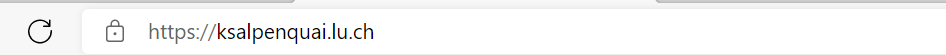

HTML (Hypertext Markup Language) ist eine textbasierte Auszeichnungssprache zur Strukturierung elektronischer Dokumente. HTML-Dokumente sind die Grundlage des World Wide Web. Vor der Entwicklung des World Wide Web war es nicht möglich, Dokumente auf elektronischem Weg einfach auszutauschen und miteinander effizient zu verknüpfen. Um Forschungsergebnisse mit anderen Mitarbeitern zu teilen, entstand 1989 im Europäischen Kernforschungszentrum CERN in der Nähe von Genf ein Projekt, welches sich mit der Lösung dieser Aufgabe beschäftigte. Als Resultat erschien am 3. November 1992 die erste Version der HTML-Spezifikation.
Als Auszeichnungssprache dient HTML dazu, einen Text zu strukturieren. HTML-Dokumente bestehen nur aus Text, dem sogenannten Quelltext (Source-Code) . Der Quelltext kann in einem beliebigen Textverarbeitungsprogramm verfasst und bearbeitet und im Format *.html gespeichert werden. Die durch den Quelltext beschriebene Seite kann von einem Browser angezeigt werden. Nicht alle Inhalte der HTML-Datei werden vom Browser angezeigt. Neben den vom Browser angezeigten Inhalten können HTML-Dateien zusätzliche Angaben in Form von Metainformationen enthalten, diese können ebenfalls eine grosse Rolle für die Anzeige einer Website durch Suchmaschinen haben.
Der HTML-Code zu Webseiten wird normalerweise auf einem Server gespeichert. Wenn wir die URL (Uniform Resource Locator) einer Webseite im Browserfenster eingeben, wird auf dieses Dokument zugegriffen.
Wir können aber das Dokument auch lokal auf dem Computer speichern und den Pfad zu diesem Dokument als Adresse ins Browserfenster eingeben.